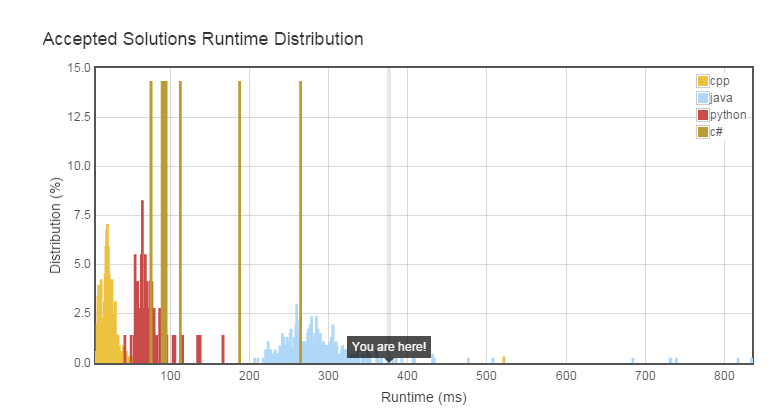

@https://leetcode.com/problems/word-break-ii/
Given a string s and a dictionary of words dict, add spaces in s to construct a sentence where each word is a valid dictionary word.
Return all such possible sentences.
For example, given
s = "catsanddog",
dict = ["cat", "cats", "and", "sand", "dog"].
A solution is ["cats and dog", "cat sand dog"].
前段时间一直在研究这个算法的优化问题，在我的项目MyJavaWorkspace/splitword里面有我写过的几个版本，现在这里是优化过后的一个版本， 适合比较大型的分词。唯一不同的是这里没有采用MAX_LEN来约束最长单词长度。
基本思路：
1、从一开始遍历字符串，利用dict来猜词。
/ 1.猜到字符串最后了，添加结果，返回true
2、猜到一个单词之后，如果 ->
\ 2.没猜到最后，继续猜剩下的字符串。如果剩下字符串返回false，则加入err的Set中。
\3.如果后缀字符串能在err中找到，说明后缀字符串没办法分词，放弃这次猜词。
3.假如没猜到单词，那么返回false
AC代码： public class Solution {
Set<String> err = new TreeSet<String>(); //存放不能分词的尾串
List<String> res = new LinkedList<String>(); //结果
private static LinkedList<Integer> tmp = new LinkedList<Integer>(); //记录切分句子的空格的位置
private boolean guess(String s,Set<String> dict,int start)
{
boolean flag = false;//用于标识这次查找有没有猜到一个单词
for(int i=start+1; i<=s.length(); i++){
//当目前这个词能在字典中找到，并且后缀串不在err中时，说明这是一个暂时有效的猜词
if(dict.contains(s.substring(start,i)) && !err.contains(s.substring(i))){
tmp.add(i); //记录当前切分词的位置
flag = true;
if(i == s.length()){
String t = "";
int k = 0;
for(int x:tmp){
if(k==0){
t += s.substring(k,x);
}else{
t = t + " " + s.substring(k,x);
}
k = x;
}
res.add(t); //将结果存入res中
tmp.pollLast(); //记得抹去当前位置空格的记录（回溯到递归前的状态）
return true;
}else{
if(!guess(s,dict,i)){
err.add(s.substring(i)); //子串不能正确切分，则将该串存入err中
}
tmp.pollLast(); //无论子串是否可以匹配，都要回溯到递归前状态。
}
}
}
return flag;
}
public List<String> wordBreak(String s, Set<String> wordDict) {
guess(s,wordDict,0);
return res;
}
}
结果：

4/24/2015 5:28:49 PM